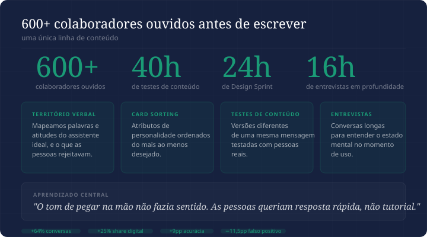

01: O contexto
A instituição tinha um assistente virtual de RH maduro em uso. O problema era que ninguém sabia bem quem ele era. Os colaboradores confundiam com outros bots do banco, o tom era genérico e o objetivo principal, aumentar o share digital de atendimento, estava longe de ser atingido.
O desafio era criar uma voz, um nome e uma personalidade a partir do zero, sem perder os resultados que o bot já tinha. E fazer isso ouvindo as pessoas que usavam o sistema todos os dias, não só o time de produto.
02: O processo de pesquisa

Para ver a experiência completa com animações e imagens interativas, acesse pelo computador.
O processo que deu vida a Niara
Antes de escrever uma linha de conteúdo, fui ouvir. O processo levou semanas e envolveu mais de 600 colaboradores em diferentes formatos.
600+
colaboradores ouvidos
16h
de entrevistas em profundidade
Território verbal
Mapeamos quais palavras e atitudes os colaboradores associavam a um assistente de RH ideal, e o que não queriam de forma alguma.
Card sorting
Atributos de personalidade organizados do mais ao menos desejado. A surpresa estava no que eles rejeitaram.
Testes de conteúdo
Versões diferentes de uma mesma mensagem testadas com colaboradores reais. Medimos clareza, tom percebido e intenção de usar de novo.
Entrevistas em profundidade
Conversas longas para entender o estado mental no momento de uso: estressado, com pressa, buscando resposta rápida.
O principal aprendizado da pesquisa foi que o tom existente, de pegar na mão e ensinar passo a passo, não fazia sentido para a realidade dos colaboradores. Eles precisavam de informação simples, concisa e rápida. Agilidade sem perder o cuidado.
03: Assim nasceu a Niara
Colaborador pergunta sobre férias. A Niara consulta o saldo, informa os dias disponíveis e o prazo mínimo, e direciona para o portal de RH para a solicitação formal.
Para ver a experiência completa com animações e imagens interativas, acesse pelo computador.
A Niara em ação
Aquela pessoa que sabe a resposta, fala direto e ainda te deixa com uma boa sensação no final.
Descrição da Niara no guia de tom de voz
Além da personalidade, identificamos a necessidade de um rosto e um nome para o assistente. Niara nasceu de um processo colaborativo entre design, conteúdo e os próprios colaboradores que participaram das pesquisas.
Com a personalidade definida, desenvolvemos o guia de tom de voz, as personas de quem usa o bot e toda a curadoria de conteúdo que garantiu a consistência da voz ao longo do tempo.
04: O resultado
+25%
share de atendimento digital
Esses resultados vieram depois do processo completo de personalidade, tom de voz e curadoria, inclusive após o desligamento da URA de atendimento. O share digital não só se manteve como cresceu.
Quando um assistente tem personalidade de verdade, as pessoas param de tratá-lo como uma máquina. E quando param de tratar como máquina, confiam mais. E quando confiam mais, usam mais.
Samantha Barreto
05: Decisões de design
Por que o tom de "pegar na mão" não funcionava?
Os colaboradores já sabiam usar o sistema. O que eles precisavam era de resposta rápida, não de tutorial. Um tom didático demais comunica desconfiança na capacidade do usuário.
Por que um nome e um rosto fazem diferença em um chatbot corporativo?
Identidade cria consistência. Quando o assistente tem nome e personalidade definida, toda decisão de conteúdo tem um critério claro: a Niara falaria assim? Se não, reescreve. Sem nome e personalidade, cada texto vira uma opinião diferente.
Como garantir consistência de voz com o crescimento do escopo?
Guia de tom de voz documentado, personas criadas a partir de pesquisa real e ciclos de curadoria regulares. A voz não pode depender de quem está escrevendo naquele dia.